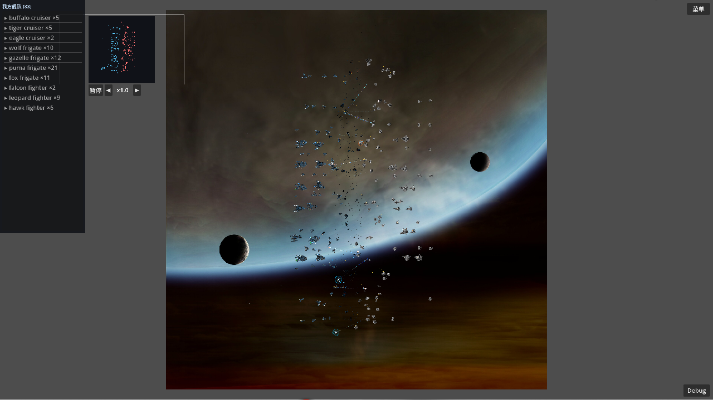

sim 没问题，该改的是爆炸、表现层和工具链
Linux 上用 Godot 4.7.1 Mono 跑通了大会战。日志：GSB battle started: 500 vs 500。sim 约 0.3ms/步，卡的是画面。下面把「这台机器没 GPU」和「代码真问题」分开。

实机截图：500v500 中盘。交火线很多，大爆炸和烟火偏少，和 P0 缺爆炸映射对得上。「我方舰队 (83)」是开打后战斗机先死，不是列表 bug。
先把环境和代码分开
| 现象 | 证据 | 含义 |
|---|---|---|
| Vulkan 缺失 → OpenGL 3 / llvmpipe | godot.log L2–L10 | 软件光栅。MEMORY 的 144 FPS / 7–9ms 是 Windows 真 GPU 数字。 |
| V-Sync unsupported | log L8–L9 | 驱动不支持改 V-Sync，不是代码写死 144。 |
| ALSA no card → dummy audio | log L11–L22 | 没声卡。以后接上音频池，这台机器也听不到。 |
fps=21–36 · sim=0.25–0.41ms/step · frame=53–80ms | log L27–L30 | sim 很便宜；帧时间是 presentation + llvmpipe。 |
| 截图左右灰边 | viewport 1920×1080，启动 1280×720 | 16:9 画布 + 正方形地图 + stretch expand，不是渲染错误。 |
运行时真正属于代码的警告只有两类：Main.tscn 无效 UID（已回退到路径，能开）；particle config missing: exp_destruction_placed / exp_sparkburst（爆炸缺段）。
1. Runtime bugs
P0 EXP_DESTRUCTION_PLACED 没有映射，连锁爆炸最常见的一步是空的
- 船体
[explosions]共 841 步、14 个 EXP 名；exp_destruction_placed = 264 次（31%），出现最多。 particleconfigs（61）和explosions（15）里都没有这个名字。这是 GSB 引擎内部 token，不是漏提取。ExplosionDirector.Trigger对 blastglare / plumes / startbreakup 有特殊分支，没有这条，落到EmitterLibrary.Get后缓存 null。- 影响：巡洋/护卫死亡脚本里大量定点爆炸不播。截图交火密、大爆炸少，对得上。
- 建议：按船体等级映射到已有 explosion set（战斗机
exp_small，护卫exp_frigate，巡洋exp_medium2）。写成数据表，不要再堆 switch。
P1 exp_sparkburst 被当成粒子配置名，其实是 explosion set
explosions.exp_sparkburst.emmiters = ["spark_burst"]。特殊分支 BurstEmitter("exp_sparkburst") 绕过了 PlaySetOrEmitter。船体脚本只有 6 次，但路径是错的。删掉这个 case，走 generic 即可。
P1 表现层时钟不跟 SimSpeed，4x 会看起来像 1x
sim 用 delta * speed 推；爆炸、粒子、炮口焰、残骸都吃 Godot 帧 dt。倍速只加快逻辑。建议表现层吃 simDt = paused ? 0 : delta * speed，暂停时粒子也要停。
P1 Start-ManualTest.ps1 不转发 README 写的 --case / --sim-bench
脚本只组 --path 和可选 headless。CmdletBinding 下未声明的剩余参数还会直接报错。加 ValueFromRemainingArguments，Linux 启动脚本同样要接。
P2 Main.tscn UID 警告：sidecar 在，缓存不在
Main.cs.uid 就是 uid://jtu8qdfaawvn，不是过期 UID。.godot/ 没有 uid_cache.bin。能进战斗。删残留 Main.gd.uid；启动前 godot --import --headless --quit，或文档写明「无缓存走路径」。
P2 RequestRestartCurrent 永远重开大会战
Debug 菜单在用例里点「重开」会丢掉当前 case。记 _currentCase = -1 | 0..11。
P2 --auto-screenshot 每帧扫一遍命令行
_Ready 解析一次，热路径只看字段。
2. Performance
P1 已证实：sim 便宜，帧时间在 presentation / GPU
sim 0.25–0.41ms/step，远低于 2.5ms 预算。HUD 只显示 FPS + sim ms，没有 frame ms / 粒子占用。建议 HUD 加上 TimeProcess、ParticlePool 占用、MultiMesh instance 数。
P1 FleetRenderer 每帧全量回写船体 / 炮塔 / 辉光 / 护盾
含已死、scale=0 的 hulk。没有 VisibleInstanceCount 裁剪。1000 舰 ×（船体+炮塔+glow+4 象限盾）每帧 C# → MultiMesh。建议活船/可见船才写；辉光用累计 sim 时间；盾闪只遍历 _shieldFlash[s] > 0。
P1 ParticlePool 8192 槽，LoadScale 从未接线
G5 特效预算阀是空的。饱和时 Spawn 直接 return，新爆炸被静默丢掉。按占用下调 Low 优先级；测试用例保持 1.0。不要先上调 Capacity。
P1 BattleView 对每发弹走立即模式 DrawLine / DrawCircle
截图中场密线就是这个层。改 MultiMesh，或至少按相机视口裁剪。这是 G5 离屏降频的第一步。
P2 4x + 掉帧时 MaxStepsPerFrame=8 会丢模拟时间
21fps × 4x ≈ 11.4 步，clamp 到 8 后 accumulator 清零，越卡越慢。4x 验收先在能稳住 60 的 GPU 上做。
P2 GUI 热路径有分配；Main 还留着 Node-per-ship 回退
小地图可降到 10Hz；舰队列表用脏标记。没有 db.json 时会走 250×2 方块船 / 30Hz。删回退或挪到 tools/。
3. Portability
P1 工具链写死 win64，Linux 靠 symlink 才 restore
Start-ManualTest.ps1 和 NuGet.Config 都指向 Godot_v4.7.1-stable_mono_win64。探测操作系统，Linux 用 linux x86_64 路径；加 scripts/start-manual-test.sh。不要把 symlink 当正式方案。
P1 MEMORY 写 data/gsb/ 已 gitignore，实际没有
风险：误提交几百 MB PNG/OGG；或别人 clone 后没有数据，静默掉进 FleetUnit 方块演示。补 .gitignore；缺 db.json 应报错退出。
P2 提取配置带 Windows 路径；文档假设 Python 3.14 + PowerShell
gsb_extract.toml 写死 E:/game/...。提交 gsb_extract.toml.example。文档加一节 Linux：DOTNET_ROOT、Godot 二进制、--import、无 GPU 时不要用帧率当回归。
4. UX / product
P1 暂停菜单两个按钮是置灰占位
「游戏设置」「退出到主菜单」Disabled = true。G5 之前至少让退出 Quit()。
P1 OGG 已导出，游戏零播放
约 80 条音效，全库无 AudioStreamPlayer。缺的是代码，不是资源。G5 做按事件的小池（开火 / 沉船 / 盾击中），上限 32 路。
P2 暂停冻结不完整 · 不能慢放 · 用例索引文档漂移
- 粒子、受击火、船体辉光没接暂停。
MinSpeed = 1.0，验收弹道时不能慢放。建议 0.1。- 代码权威是 12 个用例 0–11（6 = 护盾格挡）。MEMORY 写成 0–10，整体错位。
RunShieldCheck用Count - 6，再加一条就会验错题。按名字找「护盾格挡」。
5. Architecture
P1 Main.cs 同时是启动器、headless 工具、旧演示、战斗编排
769 行。headless 验收搬到 scripts/tools/。Main 只做：读参数 → StartBattle → 每帧步进 + 暂停接线。AddChild 顺序用 PresentationStack。
P1 EXP 名映射是硬编码 switch，和数据驱动规范打架
一张表：scriptName → { kind, name, scale }。启动时校验每个船体 EXP 都能解析，缺的进 --g0-check，不要等第一艘船死才警告。
P2 其它
- sim 用了
Mathf.Pi/Godot.Vector2，抽纯 .NET 测试会痛。 FighterBlocker往全局db.Modules写，污染单例库。- G5 钩子只存在于注释和
LoadScale字段。先做预算阀、视口裁剪、表现层 simDt，再谈 compute。 - 设计文档还写
Ships.cs/Hud.cs，实际是ShipStore/BattleGui。SimCore文件头步进顺序和真实 Step 不一致。 - 表现层魔法数分散，收到
PresentationConfig。 - 切 test case 会
QueueFree再 new 全部 renderer，复用节点更顺。
6. 已核对、本次不上升
- sim 没有节点泄漏。GUI 经
IBattleContext读 SoA。 ParticlePool的VisibleInstanceCount用法是对的。- 护盾象限偏移
(-0.5,+0.5)·R、alpha 混合、半径 0.8 与 MEMORY 一致，不要「修正」。 - 船体闪白走 instance color，没用 INSTANCE_CUSTOM。
- 用户暂停 vs Esc 菜单暂停，接线正确。缺的是粒子/受击层。
EmitterLibrary对真缺失配置 warn 一次 + 缓存 null，正确。问题在调用方给了错名字。- 确定性：
--sim-bench仍是 sim 回归入口；表现层 RNG 不进 hash。
7. 建议动手顺序
- P0 给
exp_destruction_placed做按等级映射；顺手修exp_sparkburst。启动时打印未映射 EXP 名。 - P1 表现层改吃
simDt；粒子 / 受击火接暂停；LoadScale按占用下调。 - P1 Linux 启动脚本 + NuGet 不绑 win64；
.gitignore补data/gsb/；脚本转发剩余参数。 - P1
FleetRenderer少写死船 / 非闪盾；弹道改批处理或裁剪。 - P1 对齐 MEMORY/README/代码的 0–11；
RunShieldCheck按名字选 case。 - P2 删
Main.gd.uid+ FleetUnit 回退；Esc「退出」可点；音频池进 G5。
data/gsb 整包提交进 git。